대기환경산업기사 (2011-03-20 기출문제)
1과목: 대기오염개론
1. 열섬현상에 관한 설명으로 옳지 않은 것은?
- 도시의 건물 등 구조물에 의한 거칠기 길이의 변화도 원인이 된다.
- 도시 지역의 인구 집중에 따른 인공열 발생의 증가도 원인이 된다.
- 도시의 온도증가에 따른 상승기류로 인하여 운량과 강우량이 감소한다.
- 직경 10km 이상의 도시에서 잘 나타나는 현상이다.
(정답률: 80%)

2. 180℃ 1atm 에서 이산화황의 농도가 2g/m3이다. 표준상태에서 몇 ppm 인가?
- 1162
- 1754
- 1968
- 2018
(정답률: 72%)
3. 다음 대기오염물질 중 대기 내의 평균 체류시간이 1~4일 정도로 짧고, 지구규모보다는 산성비와 같은 국지적인 환경오염에의 기여가 큰 것은?
- SO2
- O3
- CO2
- N2O
(정답률: 88%)
4. 다음 그림은 탄화수소가 존재하지 않는 경우 NO2의 광화학싸이클(Photolytic cycle)이다. 그림의 A 및 B에 해당되는 물질은?
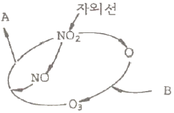
- A = NO2, B = NO
- A = O2, B = CO2
- A = NO, B = NO2
- A = O2, B = O2
(정답률: 90%)
5. 냄새물질의 특성에 관한 설명으로 가장 거리가 먼 것은?
- 냄새물질이 비교적 저분자인 것은 휘발성이 높은 것을 의미한다.
- 냄새물질은 화학반응성이 풍부한 편이다.
- 냄새물질은 실온에서 대다수가 액상이다.
- 화학물질이 냄새물질로 되기 위해서는 대부분 친수성의 단일기를 가져야 한다.
(정답률: 72%)
6. 대기오염물질의 확산에 관한 설명으로 옳은 것은?
- 굴뚝에서 연기가 나올 때 굴뚝연기 배출속도가 바람의 속도보다 크면 다운드래프트 현상을 일으킨다.
- 굴뚝높이를 주변의 건물보다 1.5배 높게 하여 다운드래프트 현상을 방지한다.
- 유효굴뚝 높이는 굴뚝높이에 연기의 수직상승 높이를 더한 것이다.
- 다운드래프트 현상을 방지하기 위해서는 배출가스의 온도를 낮추어 부력을 감소시켜야 한다.
(정답률: 77%)
7. 실내공기오염물질인 라돈(Rn)에 관한 설명으로 옳지 않은 것은?
- 무색, 무취의 기체로 폐암을 유발한다.
- 자연계에는 존재하지 않으며, 공기에 비해 약 3배 정도 무겁다.
- 반감기는 3.8일 정도이고 호흡기로 흡입이 현저하다.
- 토양, 콘크리트, 대리석 등으로부터 공기 중으로 방출된다.
(정답률: 85%)
8. 다음 오염물질 중 수산기를 포함하는 것은?
- chloroform
- benzene
- methyl mercaptan
- phenol
(정답률: 86%)
9. 다음 대기오염물질 중 2차 오염물질에 해당하는 것은?
- NaCl
- H2S
- SiO2
- NOCl
(정답률: 85%)
10. 굴뚝의 높이보다 낮게 지표 가까이에 역전층이 이루어져 있고, 그상공에는 비교적 불안정 상태일 때 발생하며, 주로 고기압지역에서 맑고 바람이 약한 경우 초저녁부터 아침에 걸쳐 잘 발생되기 쉬운 연기형태는?
- looping형
- fumigation형
- fanning형
- lofting
(정답률: 84%)
11. 지면에서의 평균 풍속이 4m/sec , 안정도 등급이 B등급인 노천에서 소각물의 배출량이 109.9g/sec라면 이 때 연기 중심선상을 따라 2km 풍하거리 지면에서의 PM10 농도를 옳게 계산한 것은? (단, 가우시안형의 연기확산식을 적용하고 표준상태를 기준으로 수평 및 수직확산계수는 각각 250m와 350m , 소각물 중 PM10의 배출율은 전체 소각물 배출량의 40% 라고 가정한다.)
- 10 μg/m3
- 20 μg/m3
- 30 μg/m3
- 40 μg/m3
(정답률: 57%)
12. 다음 오염물질이 인체에 미치는 영향으로 가장 거리가 먼 것은?
- 알루미늄 화합물은 불소의 흡수를 억제하고 칼슘과 철 화합물의 흡수를 감소시키며, 소장에서 인과 결합하여 인 결핍과 골연화증을 유발한다.
- 알루미늄 독성작용으로 인간에게서 입증된 2개의 주요조직은 뼈와 뇌이고, 알루미늄열은 결막염, 습진, 상기도 자극 등을 유발할 수 있다.
- 셀레늄의 만성기중 폭로 시 주로 설태가 끼이며, 혈장 콜레스테롤치가 저하한다.
- 셀레늄은 주로 폐, 위장관 혹은 손상된 피부를 통해 흡수되고, 간에서 유기 셀레늄의 형태로 대사되어진다.
(정답률: 78%)
13. 광화학반응에 관한 일반적인 설명으로 옳지 않은 것은?
- 광화학반응의 생성물로 PAH, CH3ONO2, 케톤 등이 있다.
- 광화학반응이 일어나면서 NO2가 감소하고 여기에 대응하여 NO가 증가한다.
- NO에서 NO2로의 산화가 거의 완료되고, NO2가 최고농도에 도달하기 직전부터 O3가 생성되기 시작한다.
- 알데히드는 O3생성에 앞서 반응 초기부터 생성되며 탄화수소의 감소에 대응한다.
(정답률: 71%)
14. 다음 반사영역이 고려된 가우시안 확산모델에서 각 항에 대한 설명으로 옳지 않은 것은?
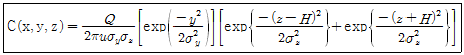
- Q : 오염원의 배출량으로서 단위는 질량/시간이다.
- z : 농도를 구하려는 지점의 굴뚝으로부터의 풍하방향의 수평거리를 말한다.
- u : 굴뚝높이의 풍속을 말한다.
- H : 유효굴뚝높이다.
(정답률: 85%)
15. 다음 중 연기 내에서 오염의 단면분포가 전형적인 가우시안분포(Gaussian distribution)를 보이는 것은?
- conig
- looping
- fanning
- lofting
(정답률: 69%)
16. 뮤즈계곡, 도노라, 런던스모그 사건과 같은 대기오염 사건에서 공통적으로 발생한 환경조건을 나열한 것으로 옳은 것은?
- 무풍, 기온역전, 황산화물
- 광화학반응, 기온역전, 오존
- 강한바람, 과단열상태, 황산화물
- 광화학반응, 과단열상태, 오존
(정답률: 91%)
17. 다음 중 인체의 폐 속으로의 침투도가 최대가 될 뿐 아니라 빛의 산란도 역시 최대가 되어 가시도 감소에 큰 영향을 주는 먼지의 입경범위로 적합한 것은?
- 0.001 ~ 0.01 μm
- 0.01 ~ 0.1 μm
- 0.1 ~ 1.0 μm
- 10 ~ 50 μm
(정답률: 80%)
18. 높이 40m인 굴뚝으로부터 20m/sec로 연기가 배출되고 있다. 굴뚝 반지름은 2m, 굴뚝 주위로 풍속은 4m/sec, 배출가스의 열방출률은 4000kJ/sec일 때, 아래의 식을 이용하여 유효굴뚝의 높이를 계산하면? (단, Holland의 식은 아래와 같고, Qh는 열방출률(kJ/sec),
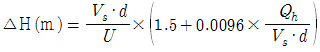
)- 약 25 m
- 약 40 m
- 약 65 m
- 약 80 m
(정답률: 64%)
19. 지상 100m에서 풍속이 20m/sec라면, 지상 15m에서의 풍속은? (단, Deacon 식을 적용하고, 풍속지수 값은 0.3)
- 약 6 m/sec
- 약 11 m/sec
- 약 16 m/sec
- 약 21 m/sec
(정답률: 76%)
20. 최근 문제시 되고 있는 석면에 관한 설명으로 옳지 않은 것은?
- 석면은 자연계에서 산출되는 길고, 가늘고, 강한 섬유상 물질이다.
- 석면에 폭로되어 중피종이 발생되기 까지의 기간은 일반적으로 폐암보다는 긴 편이나 20년 이하에서 발생하는 예도 있다.
- 석면은 화학약품에 대한 저항성이 약하고, 전기절연성이 없다.
- 석면의 발암성은 청석면이 온석면보다 강하다.
(정답률: 73%)
2과목: 대기오염 공정시험 기준(방법)
21. 원통 여지의 포집기를 사용하여 배출가스중의 먼지를 포집하였다. 측정치는 다음과 같다고 할 때 먼지 농도는 약 몇 mg/m3 인가?
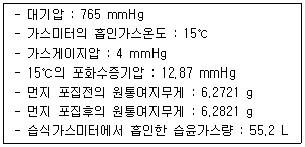
- 212
- 2⑤
- 200
- 192
(정답률: 58%)
22. 다음은 이온크로마토그래프의 장치구성 중 어떤 것에 관한 설명인가?
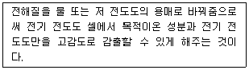
- 용리액조
- 써프렛서
- 검출기
- 분리관
(정답률: 85%)
23. 0.02M의 황산 30mL를 중화시키는데 필요한 0.1N 수산화나트륨 용액의 양(mL)은?
- 3 mL
- 6 mL
- 12 mL
- 20 mL
(정답률: 76%)
24. 다음 시약 조합 중 불소화합물 분석방법에 사용되는 것은?
- p-아미노디메틸아닐린 용액 - 염화제이철 용액
- 오르토 톨리딘 - 염산용액
- 피리딘피라졸론 - p-디메틸 아미노 벤질리덴 로다닌의 아세톤 용액
- 란탄 - 알리자린콤플렉손용액
(정답률: 73%)
25. 다음은 환경대기 중 휘발성 유기화합물(유해 VOCs 고체흡착법) 분석에 사용되는 용어의 정의이다. ( ① )안에 알맞은 것은?
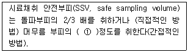
- 1/2
- 2배
- 5배
- 10배
(정답률: 84%)
26. 다음은 굴뚝배출가스 내의 질소산화물 분석방법 중 아연환원 나프틸에틸렌디아민법에 관한 설명이다. ( )안에 알맞은 것은?
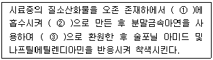
- ① NaOH용액, ② 질산이온, ③ 아질산이온
- ① H2SO4용액, ② 아질산이온, ③ 질산이온
- ① NaOH용액, ② 아질산이온, ③ 질산이온
- ① 물, ② 질산이온, ③ 아질산이온
(정답률: 69%)
27. 단면이 원형인 굴뚝의 굴뚝반경이 1.7 m 인 경우 측정점수로 옳은 것은?
- 20
- 16
- 12
- 8
(정답률: 87%)
28. 굴뚝 배출가스 중 납화합물 분석을 위한 자외선/가시선 분광방법에 관한 설명으로 옳지 않은 것은?
- 납착염의 흡광도를 680nm에서 측정하여 정량한다.
- 자외선/가시선 분광법의 정량범위는 0.001~0.04mg이며, 정밀도는 3~10%이다.
- 납착물은 시간이 경과하면 분해되므로, 가능한 빛을 차단하고, 20℃이하에서 조작하며, 장시간 방치하지 않도록 한다.
- 비교적 다량의 비스무트가 함유되어 있으면, 시안화칼륨용액으로 세정조작을 반복하더라도 무색이 되지 않으므로 이 경우에는 납과 비스무트를 분리하여 시험한다.
(정답률: 72%)
29. 가스크로마토그래피에서 A , B 성분의 보유시간이 각각 2분 , 3분 이었으며, 피크폭은 32초 , 38초 이었다면 이 때 분리도는?
- 1.2
- 1.5
- 1.7
- 1.9
(정답률: 73%)
30. 다음은 굴뚝 배출가스 중의 페놀류의 가스크로마토그래프 분석방법이다. ( )안에 알맞은 것은?
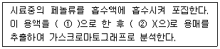
- ① 산성 , ② 초산에틸
- ① 산성 , ② 차아염소산나트륨용액
- ① 염기성 , ② 초산에틸
- ① 염기성 , ② 차아염소산나트륨용액
(정답률: 57%)
31. 가스크로마토그래프의 각 장치에 관한 설명으로 옳지 않은 것은?
- 가스 시료도입부는 가스계량관(통상 0.5~5μl) 및 가스성분 분석부와 유료변환기구로 구성된다.
- 방사성 동위원소를 사용하는 검출기를 수용하는 검출기 오븐에 대하여는 온도조절기구와는 별도로 독립작용할 수 있는 과열방지기구를 설치해야 한다.
- 가스를 연소시키는 검출기를 수용하는 검출기 오븐은 그 가스가 오븐 내에 오래 체류하지 않도록 된 구조이어야 한다.
- 분리관 오븐의 온도조절 정밀도는 ±0.5℃의 범위이내 전원 전압변동 10%에 대하여 온도변화 ±0.5℃ 범위이내(오븐의 온도가 150℃ 부근일 때)이어야 한다.
(정답률: 58%)
32. 굴뚝 배출가스 중의 비소화합물을 자외선/가시선 분광법으로 분석할 때의 설명으로 옳은 것은?
- 적자색 용액의 흡광도를 510nm에서 측정
- 황색 용액의 흡광도를 400nm에서 측정
- 청색 용액의 흡광도를 520nm에서 측정
- 적색 용액의 흡광도를 435nm에서 측정
(정답률: 74%)
33. 환경대기 중의 옥시단트(오존으로서) 농도 측정법 중 화학발광법(자동연속측정법)의 측정원리 및 성능에 대한 설명으로 옳지 않은 것은?
- 주 방해물질로는 SOx, NOx 등 이고, 수분에 대하여는 거의 영향을 받지 않는다.
- 오존과 에틸렌 가스가 반응할 때 생기는 발광도가 오존농도와 비례관계가 있다는 것을 이용한다.
- 최저감지농도는 0.003 ppm이다.
- 측정범위는 원칙적으로 0.5 ppm O3로 한다.
(정답률: 64%)
34. 압력단위를 환산한 것으로 옳지 않은 것은?
- 1 atm = 760 mmHg
- 1 mmHg = 13.6 mmH2O
- 1 mmAq = 14.7 psi
- 1 mmH2O = 1 kg/m2
(정답률: 79%)
35. 다음은 물질의 파쇄 및 선별 시 외부로 비산 배출되는 먼지의 분석방법 중 불투명도 측정법에 관한 설명이다. ( )안에 알맞은 것은?
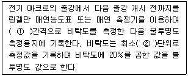
- ① 10초 , ② 0.5도
- ① 30초 , ② 0.5도
- ① 10초 , ② 1도
- ① 30초 , ② 1도
(정답률: 62%)
36. 하이볼륨에어샘플러법으로 비산먼지 측정 시 시료채취장소 및 위치선정으로 가장 적합한 것은?
- 풍하방향에 대상 발생원의 영향이 없을 것으로 추측되는 곳에 대조위치를 선정한다.
- 발생원의 비산먼지 농도가 가장 낮을 것으로 예상되는 지점 2개소 이상을 선정한다.
- 측정하려고 하는 발생원의 부지경계선상에서 선정한다.
- 풍향은 고려하지 않아도 된다.
(정답률: 70%)
37. 환경대기 중의 탄화수소 농도를 측정하기 위한 주 시험법은?
- 총탄화수소 측정법
- 비메탄 탄화수소 측정법
- 활성 탄화수소 측정법
- 비활성 탄화수소 측정법
(정답률: 84%)
38. 굴뚝 배출가스 내의 산소농도 측정을 위한 산소측정기 중 담벨형(Dumb-Bell) 자기력 분석계에 관한 설명으로 옳지 않은 것은?
- 피드백코일은 편위량을 없애기 위하여 전류에 의하여 자기를 발생시키는 것으로 일반적으로 백금선이 이용된다.
- 담벨은 자기화율이 큰 유리 등으로 만들어진 중공의 구체를 막대 양 끝에 부착한 것으로 헬륨 또는 아르곤을 봉입한 것을 사용한다.
- 편위검출부는 담벨의 편위를 검출하기 위한 것으로 광원부와 담벨봉에 달린 거울에서 반사하는 빛을 받는 수광기로 된다.
- 측정셀은 시료 유통실로서 자극사이에 배치하여 담벨 및 불균형 자계발생 자극편을 내장한 것을 사용한다.
(정답률: 79%)
39. 환경대기 중의 아황산가스 농도를 측정함에 있어 파라로자닐린법을 사용할 경우 알려진 주요 방해물질이 아닌 것은?
- Cr
- O3
- NOx
- NH3
(정답률: 75%)
40. 굴뚝 배출가스 중 황화수소 측정방법인 것은?
- 요오드적정법
- 질산토륨 - 네오트린법
- 다이페닐카바지드법
- 디티존법
(정답률: 66%)
3과목: 대기오염방지기술
41. 흡착법에 관한 설명으로 옳지 않은 것은?
- 흡착제는 기체의 흐름에 대한 압력손실이 커야 한다.
- 물리적 흡착은 보통 가용한 피흡착제의 표면적이 비례한다.
- 화학적 흡착은 분자간의 결합력이 강하고 흡착과정에서 발열량도 많다.
- 점토나 이온교환수지 등의 흡착제는 탈색에도 이용되고 Ag, Cu, Zn 등의 무기첨가제를 포함한 특수한 탄소는 가스 마스크 등에도 이용된다.
(정답률: 69%)
42. 유해가스 제거를 위한 흡수제의 구비조건으로 옳지 않은 것은?
- 용해도가 크고, 무독성이어야 한다.
- 액가스비가 작으며, 점성은 커야 한다.
- 착화성이 없으며, 비점은 높아야 한다.
- 휘발성이 적어야 한다.
(정답률: 73%)
43. 액체연료 1kg을 완전연소 하는데 필요한 이론공기량 A0(Sm3/kg)의 계산식으로 옳은 것은? (단, C , H , O , S 는 연료 1kg 중 각 성분원소의 중량분율을 나타낸다.)
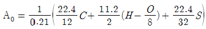
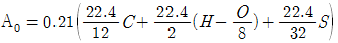
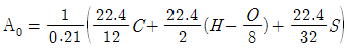
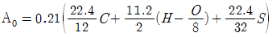
(정답률: 81%)
44. 충전탑의 가스 겉보기 속도(공탑속도) 범위로 가장 적합한 것은?
- 0.1 ~ 1 cm/sec
- 0.01 ~ 0.1 m/sec
- 0.3 ~ 1 m/sec
- 10 ~ 30 m/sec
(정답률: 69%)
45. 메탄 1mol이 공기비 1.4로 연소하는 경우 등가비(
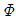
)는?- 0.71
- 2.8
- 13.33
- 24.14
(정답률: 56%)
46. 다음 중 유해가스 처리방법으로 옳지 않은 것은?
- 시안화수소 - 물에 의한 세정
- 아크로레인 - 물에 의한 세정
- 벤젠 - 촉매연소
- 비소 - 알칼리액에 의한 세정
(정답률: 78%)
47. 어떤 액체연료를 보일러에서 완전연소시켜 그 배기가스를 orsat 분석 장치로 분석한 결과 CO2 13%, O2 3%의 결과를 얻었다. 이 때 공기비는?
- 약 1.2
- 약 1.6
- 약 1.9
- 약 2.2
(정답률: 56%)
48. 다음 중 배출가스 중의 NOx 제거방법으로 가장 거리가 먼 것은?
- 선택적 촉매환원법
- 선택적 비촉매환원법
- 황산흡수법
- 석회석 주입법
(정답률: 58%)
49. 싸이클론과 전기집진장치를 직렬로 연결한 어느 집진장치에서 포집되는 먼지량이 각각 300kg/hr(싸이클론) , 197.5kg/hr(전기집진장치)이고, 최종 배출구로부터 유출되는 먼지량이 2.5kg/hr이면 이 집진장치의 총합집진효율은? (단, 기타조건은 동일하며, 처리과정 중 소실되는 먼지는 없다.)
- 98.5 %
- 99.0 %
- 99.5 %
- 99.9 %
(정답률: 51%)
50. 악취처리기술에 관한 설명으로 옳지 않은 것은?
- 흡착제를 이용한 방법을 사용할 경우 흡착제를 재생하려면 증기를 사용하여 충전층을 340℃ 정도로 가열하거나 용질을 제거할 때에는 역방향으로 충전층 내부로 서서히 유입시킨다.
- 통풍 및 희석에 의한 방법을 사용할 경우 가스토출속도는 50cm/sec 정도로 하고 그 이하가 되면 다운워시 현상을 일으킨다.
- 흡수에 의한 처리방법을 사용할 경우 흡수에 의해 제거되는 가스상 오염물질은 세정액에 대해 가용성이어야 하고, H2S의 경우는 에탄올과 아민 등에 흡수된다.
- 흡수에 의한 처리방법을 사용할 경우 단탑은 충전탑에서 가스액의 분리가 문제될 때 유용하다.
(정답률: 65%)
51. 니트로글리세린과 같은 물질의 연소형태로써 공기 중의 산소 공급없이 연소하는 것은?
- 자기연소
- 분해연소
- 증발연소
- 표면연소
(정답률: 86%)
52. 배출가스 중 황산화물을 처리하기 위해 물을 사용하는 충전탑으로 처리한 결과 순환수의 황산함량은 0.049g/L이었다. 이 순환수의 pH는?
- 1
- 2
- 2.7
- 3
(정답률: 62%)
53. 다음 연소장치 중 대용량 버너제작이 용이하고, 유량조절범위가 좁아(환류식 1:3, 비환류식 1:2 정도) 부하변동에 적응하기 어려우며, 연료 분사범위가 15~2000L/h 정도인 것은?
- 회전식 버너
- 고압기류 분무식 버너
- 유압분무식 버너
- 건타입 버너
(정답률: 77%)
54. 원소구성비(무게)가 C=75% , O=9% , H=10% , S=6%인 석탄 1kg을 완전연소 시킬 때 필요한 이론산소량은?
- 1.94 kg
- 2.23 kg
- 2.66 kg
- 2.77 kg
(정답률: 49%)
55. 가솔린 자동차 엔진작동상태 중 일반적으로 가장 많은 양의 연소되지 않은 탄화수소(HC, ppm)를 배출하는 경우는?
- 차가 정속(다소 저속)으로 운행할 때
- 차가 정속(다소 고속)으로 운행할 때
- 차의 속도가 감속될 때
- 차의 속도가 가속될 때
(정답률: 82%)
56. 처리가스량 1200m3/min , 처리속도 2cm/sec인 함진가스를 직경 25cm , 길이 3m의 원통형 여과포를 사용하여 집진하고자 할 때 필요한 원통형 여과포의 수는?
- 524개
- 425개
- 323개
- 223개
(정답률: 65%)
57. 반경 4.5cm , 길이 1.2m 인 원통형 전기집진장치에서 가스유속이 2.2m/sec이고 , 먼지입자의 분리속도가 22cm/sec일 때 집진율은?
- 98.6 %
- 99.1 %
- 99.5 %
- 99.9 %
(정답률: 67%)
58. 수소 12.5% , 수분 0.3%인 중유의 고위발열량이 1⑤00kcal/kg이다. 이 중유의 저위발열량은?
- 9823 kcal/kg
- 9535 kcal/kg
- 9300 kcal/kg
- 9018 kcal/kg
(정답률: 72%)
59. 배출가스내 먼지의 입도분포를 대수확률방안지에 plot한 결과 직선이 되었고, 84.13%입경과 50% 입경이 각각 4.5μm 와 9.5μm 이었다. 이 때 기하평균입경은?
- 4.5μm
- 7.0μm
- 9.5μm
- 14.0μm
(정답률: 65%)
60. 다음 세정식 집진장치 중 송풍기를 계통적으로 설치할 수 없는 상황에서 비교적 처리가스량이 적을 때 쓰이며, 사용수량이 다른 세정장치에 비해 10~20배 정도 , 액가스비가 10~50 L/m3 정도인 것은?
- Cyclone scrubber
- Venturi scrubber
- Jet scrubber
- Hydro filter
(정답률: 74%)
4과목: 대기환경 관계 법규
61. 대기환경보전법규상 사업자가 배출시설을 운영할 때에 나오는 오염물질을 자가측정한 기록과 측정 시 사용한 여과지 및 시료채취기록지의 보존기간은 얼마인가?
- 환경오염공정시험기준에 따라 최종 기재하거나 측정한 날부터 3개월로 한다.
- 환경오염공정시험기준에 따라 최종 기대하거나 측정한 날부터 6개월로 한다.
- 환경오염공정시험기준에 따라 최종 기대하거나 측정한 날부터 1년으로 한다.
- 환경오염공정시험기준에 따라 최종 기대하거나 측정한 날부터 3년으로 한다.
(정답률: 66%)
62. 대기환경보전법규상 특별대책지역에 휘발성 유기화합물을 배출하는 시설로서 대통령령으로 정하는 시설을 설치하고자 하는 자가 규정의 첨부서류와 함께 휘발성 유기화합물 배출시설 설치신고서를 제출하여야 하는 기간기준으로 옳은 것은?
- 시설설치일과 동시
- 시설설치일 10일전까지
- 시설설치일 15일전까지
- 시설설치일 30일전까지
(정답률: 48%)
63. 대기환경보전법상 7년 이하의 징역이나 1억원 이하의 벌금에 해당되는 자는?
- 거짓으로 배출시설 설치 신고를 하고 배출시설을 설치하거나 그 배출시설을 이용하여 조업한 자
- 방지시설 설치대상이지만 방지시설을 설치하지 아니하고 배출시설을 설치ㆍ운영한 자
- 배출오염물질의 배출허용기준 준수여부 확인을 위한 측정기기의 부착 등의 조치를 하지 아니한 자
- 연료의 공급지역이나 시설에 황함유 기준 초과와 관련하여 연료사용 제한조치 등의 명령을 위반한 자
(정답률: 53%)
64. 환경정책기본법령상 SO2의 대기환경기준은? (단, 24시간평균치)
- 0.02 ppm 이하
- 0.⑤ ppm 이하
- 0.06 ppm 이하
- 0.15 ppm 이하
(정답률: 63%)
65. 대기환경보전법규상 환경기술인의 교육기준으로 옳지 않은 것은?
- 보수교육은 신규교육을 받은 날을 기준으로 3년마다 1회 받는다.
- 교육 대상자가 그 교육을 받아야 하는 기한의 마지막 날 이전 2년 이내에 동일한 교육을 받았을 경우에는 해당 교육을 받은 것으로 본다.
- 정보통신매체를 이용하여 원격교육을 하는 경우를 제외한 환경기술인의 교육기간은 5일 이내로 한다.
- 환경기술인은 환경보전협회 , 환경부장관 또는 시ㆍ도지사가 교육을 실시할 능력이 있다고 인정하여 위탁하는 기관에서 실시하는 교육을 정기적으로 받아야 한다.
(정답률: 81%)
66. 대기환경보전법규상 공동방지시설을 운영기구 대표자가 공동방지시설을 설치하고자 할때 제출하여야 하는 공동방지시설의 위치도로 옳은 것은?
- 축척 5천분의 1의 지형도
- 축척 1만분의 1의 지형도
- 축척 2만5천분의 1의 지형도
- 축척 5만분의 1의 지형도
(정답률: 86%)
67. 대기환경보전법규상 대기오염방지시설에 해당하지 않는 것은? (단, 기타사항은 제외)
- 미생물을 이용한 처리시설
- 음파집진시설
- 촉매반응을 이용하는 시설
- 화학적 침강시설
(정답률: 66%)
68. 다중이용시설 등의 실내공기질 관리법규상 “지하도상가”에서의 VOC(μg/m3) 실내공기질 권고기준은? (단, 휘발성유기화합물(VOC)은 총휘발성유기화합물(TVOC)을 말한다.)
- 200 이하
- 400 이하
- 500 이하
- 1000 이하
(정답률: 74%)
69. 대기환경보전법규상 위임업무 보고사항 기준으로 옳지 않은 것은?(오류 신고가 접수된 문제입니다. 반드시 정답과 해설을 확인하시기 바랍니다.)
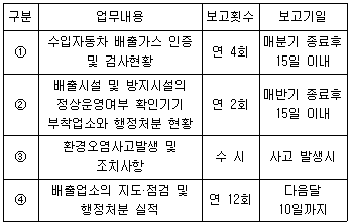
- ①
- ②
- ③
- ④
(정답률: 52%)
70. 대기환경보전법령상 연료를 연소하여 황산화물을 배출하는 시설에서 연료의 황함유량이 1.0%를 초과하는 경우 기본부과금의 농도별 부과계수로 옳은 것은? (단, 황산화물의 배출량을 줄이기 위하여 방지시설을 설치한 경우와 생산공정상 황산화물의 배출량이 줄어든다고 인정하는 경우를 제외한다.)
- 0.2
- 0.4
- 1.0
- 1.5
(정답률: 64%)
71. 대기환경보전법상 대기환경규제지역 실천계획 고시 전에 기존 휘발성 유기화합물 배출시설을 설치 운영하던 자가 배출시설 설치 신고를 하여야 하는 기간(기준)으로 옳은 것은?
- 대기환경규제지역으로 지정ㆍ고시된 날부터 3개월 이내
- 대기환경규제지역으로 지정ㆍ고시된 날부터 6개월 이내
- 대기환경규제지역으로 지정ㆍ고시된 날부터 1년 이내
- 대기환경규제지역으로 지정ㆍ고시된 날부터 2년 이내
(정답률: 32%)
72. 대기환경보전법령상 사업자 과실로 확정배출량을 잘못 산정하여 제출 후 부과금 납부명령을 받은 사업자가 부과금 조정을 신청할 경우 조정신청기간은 부과금납부통지서를 받은 날부터 얼마이내에 하여야 하는가?
- 7일 이내에 하여야 한다.
- 15일 이내에 하여야 한다.
- 30일 이내에 하여야 한다.
- 60일 이내에 하여야 한다.
(정답률: 61%)
73. 대기환경보전법규상 시ㆍ도지사 등은 사업장 등의 대기오염물질 배출규제를 위해 배출시설별 배출원과 배출량을 조사하고 그 결과를 언제까지 환경부장관에게 보고하여야 하는가?
- 그 해 12월 말까지
- 다음해 1월 말까지
- 다음해 3월 말까지
- 다음해 6월 말까지
(정답률: 70%)
74. 대기환경보전법규상 특정대기유해물질이 아닌 것은?
- 리튬
- 아크릴로니트릴
- 에틸렌옥사이드
- 아세트알데히드
(정답률: 65%)
75. 대기환경보전법상 비산먼지의 발생을 억제하기 위한 시설의 설치나 조치의 이행 또는 개선명령을 이행하지 아니한 자에 대한 벌칙기준으로 옳은 것은?
- 7년 이하의 징역이나 1억원 이하의 벌금
- 5년 이하의 징역이나 3천만원 이하의 벌금
- 1년 이하의 징역이나 500만원 이하의 벌금
- 300만원 이하의 벌금
(정답률: 49%)
76. 대기환경보전법령상 연간 대기오염물질발생량에 따른 사업장 구분으로 옳은 것은?
- 대기오염물질발생량의 합계가 연간 3톤인 사업장은 5종 사업장에 해당한다.
- 대기오염물질발생량의 합계가 연간 15톤인 사업장은 4종 사업장에 해당한다.
- 대기오염물질발생량의 합계가 연간 25톤인 사업장은 2종 사업장에 해당한다.
- 대기오염물질발생량의 합계가 연간 60톤인 사업장은 1종 사업장에 해당한다.
(정답률: 82%)
77. 대기환경보전법규상 자동차 연료형 첨가제의 종류에 해당하지 않는 것은?
- 매연억제제
- 엔진진동억제제
- 세탄가향상제
- 세척제
(정답률: 56%)
78. 대기환경보전법규상 환경기술인의 준수사항 및 관리사항을 이행하지 아니한 경우 각 위반차수별 행정처분기준(1차~4차)으로 옳은 것은?
- 선임명령 - 경고 - 경고 - 조업정지5일
- 선임명령 - 경고 - 조업정지5일 - 조업정지30일
- 변경명령 - 경고 - 조업정지5일 - 조업정지30일
- 경고 - 경고 - 경고 - 조업정지5일
(정답률: 76%)
79. 대기환경보전법령상 대기오염물질 중 기본부과금의 부과대상이 되는 오염물질은?
- 황산화물 , 먼지
- 먼지 , 황화수소
- 황산화물 , 암모니아
- 황산화물 , 오존
(정답률: 56%)
80. 대기환경보전법규상 자동차연료 제조기준 중 황함량(ppm) 기준으로 옳은 것은? (단, 휘발유, 2009년 1월 1일부터 적용)
- 0.7 이하
- 2.3 이하
- 10 이하
- 60 이하
(정답률: 57%)
도시의 건물 등 구조물에 의한 거칠기 길이의 변화와 도시 지역의 인구 집중에 따른 인공열 발생의 증가도 열섬현상의 원인이 될 수 있지만, 이 설명은 옳은 것이다.
직경 10km 이상의 도시에서 잘 나타나는 현상이기도 하다.